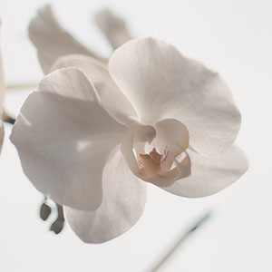
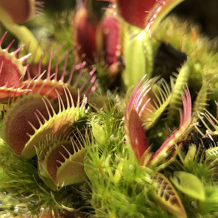
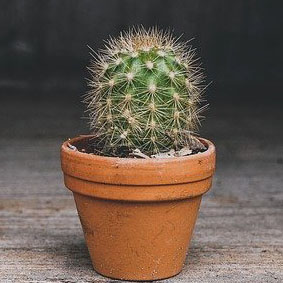
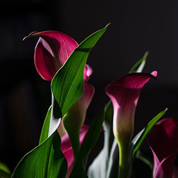

Kukkivat kasvit
Kukkivat huonekasvit tuovat väriä sisustukseen. Helposti kukkivia huonekasveja ovat esimerkiksi orkideat, kaktukset, atsaleat, hortensiat.
Viherkasvit

Kaikki kasvit tuottavat kukkia. Tähän olen koonnut kasveja, jotka eivät yleensä kasvata kukkia huonekasvina ollessaan. Viherkasvit ovat siis nimensä mukaisesti vihreitä kasveja. Tällaisia kasveja ovat esimerkiksi Traakkipuut ja Rahapuut.
Kuivassa viihtyvät kasvit

Oikea kastelun määrä on tärkeää, ja se riippuu suuresti kasvatettavasta kasvista. Mehikasvit vaativat vain vähän kastelua, sillä liikakastelulla ne alkavat mätänemään helposti.
Kosteutta tarvitsevat kasvit
Jotkut kasvit tarvitsevat paljon vettä. Monet paljon vettä haihduttavat kasvit, kuten esimerkiksi saniaiset, puolestaan vaativat jatkuvaa kastelua ja kosteuttamista, sillä ne haihduttavat paljon vettä.
Valoa tarvitsevat kasvit
Kaikki kasvit tarvitsevat auringon valoa. Osa kasveista tarvitsee sitä enemmän kun jotkut selviävät myös varjoisissa paikoissa. Kaikki kasvit eivät myöskään pärjää suorassa auringon paahteessa vaan tarvitsevat niin sanotun puolivarjoisen paikan kukoistaakseen. Kasvien valovaatimusten ymmärtäminen on kaiken a ja o hyvinvoinnin ja menestymisen kannalta. Meidän on ehkä helpointa ymmärtää, että kaktukset kuuluvat auringonpalvojiin, ja jopa rakastavat paahdetta. Ne kasvavat yleensä paikoissa, joissa aurinko paistaa pilvettömältä taivaalta eikä ympärillä ole varjostavia ja runsaalta valolta suojaavia puita. Myös muut mehikasvit ovat valoa kaipaavia kasveja. Pääsääntöisesti mehikasvit ovat sopeutuneet sietämään kuivuutta, voimakasta ja suoraa valoa, joten kotiolosuhteissa ne voivat hyvin valoisien ikkunoiden äärellä, kuten etelä- ja länsi-ikkunoilla. Sen sijaan vähässä valossa ne saattavat kasvaa honteloiksi, valoa kohti kurotellen.
Vähällä valolla pärjäävät kasvit
Trooppisten metsien aluskasvillisuutena kasvavat kasvilajit ovat sopeutuneet vähään valoon, jolloin voimme sijoittaa tällaiset viherkasvit kotonakin vähäisen valon paikalle. Varjossa viihtyvät mm. monet saniaiset, matit ja maijat, jotka kasvavat trooppisten metsien aluskasvillisuutena, jolloin ne saavat vain vähän puiden latvusten välistä siivilöityvää valoa. Kaikki kasvit tarvitsevat kuitenkin luonnonvaloa tai kasvilampun tuomaa valoa, mutta parhaiten pimeissä tiloissa selviää palmuvehka. Etenkin Suomen pimeinä kuukausina huonekasveina pärjäävät parhaiten huonekasvit, jotka eivät tarvitse paljon valoa voidakseen hyvin. Tällaisia kasveja ovat muun muassa: kirjorönsylilja (Chlorophytum comosum ’Variegatum’) muratti (Hedera helix) kilpipiilea (Pilea peperomioides) herttaköynnösvehka (Philodendron scandens) komeaviirivehka (Spathiphyllum Floribundum-ryhmä)